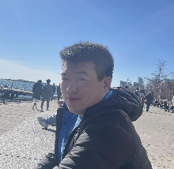

Software Engineer · SpaceX
Hey there! I am Lawrence (Larry) Tsai!
Currently Software Engineer at SpaceX in Redmond. I write software for Starlink satellite manufacturing, and also help with launch vehicle production and building AI (tools, power generation, and data centers). Previously Senior Associate Software Engineer at Capital One in New York.

PortraitLarry Tsai
About
Satellites, credit card decisioning, robots.
A University of Toronto–Trinity College math-and-physics degree, a computer science minor, a half-finished Illinois master’s. Worked at Promise Robotics, Capital One, and U of T Biology IT, and now at SpaceX.
- 01 Software Engineer at SpaceX. I write software for Starlink satellite manufacturing, and also help with launch vehicle production and building AI (tools, power generation, and data centers).
- 02 Senior Associate Software Engineer at Capital One. Distributed REST APIs in Go for credit card application decisioning, plus a configurable low-code decisioning path.
- 03 Earlier, Promise Robotics — an automated-construction startup. Python, Django, and robotics for sequencing and an MVP shown to seed investors.
- 04 IT Support Assistant in the University of Toronto Biology IT department. Linux, TCP/IP, and Bash for embedded systems, plus hardware maintenance and penetration tests across three biological science departments.
- 05 HBSc from the University of Toronto–Trinity College in Mathematics and Physics, with a Computer Science minor (2023, with distinction). Started a Masters in Computer Science at the University of Illinois Urbana-Champaign.
Contact
Say hello.
Redmond, WA. Originally from Pennsylvania. Resume and cover letter live on GitHub.